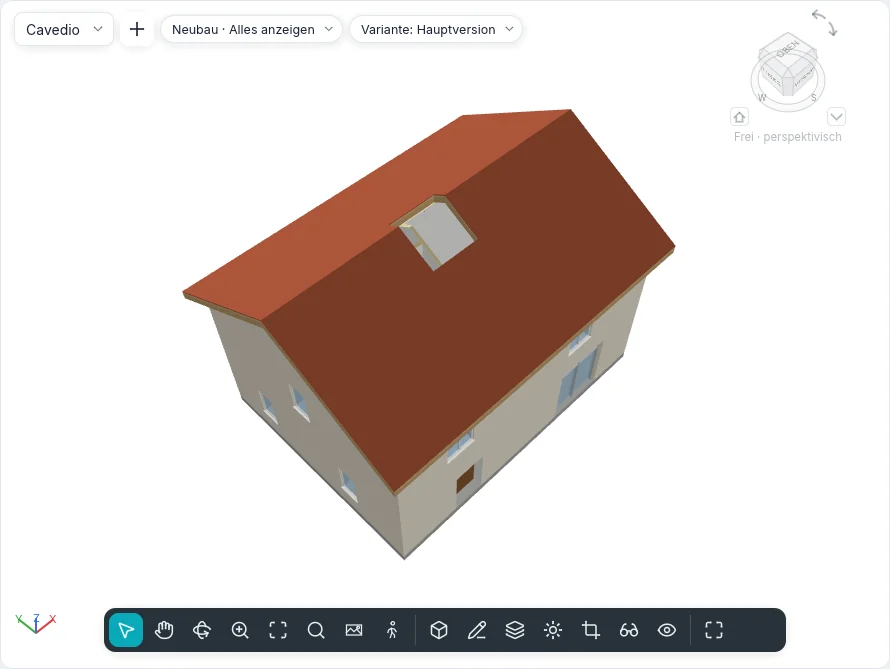

Öffnungen
Die Gruppe Öffnungen der Registerkarten Modellieren und Tragwerk schneidet Löcher, die nichts füllt: in Geschossdecken, Dächer und abgehängte Decken (Nach Fläche, Vertikal, Gaube), durch mehrere Ebenen auf einmal (Schacht) und in Wände (In der Wand). Die fünf Werkzeuge heißen in beiden Oberflächenstilen und im Touch-Modus gleich, und die Befehlszeile führt sie ebenfalls aus.
Eine Öffnung ist ein eigenes Element: Sie wird ausgewählt, bearbeitet, verschoben und gelöscht wie jedes andere, und sie geht mit ihrem Basisbauteil mit. Eine Schleife, die in der eigenen Skizze einer Geschossdecke, eines Dachs oder einer abgehängten Decke gezeichnet wird, bleibt wie bisher eine Öffnung in der Begrenzung dieses Elements.
Öffnungen in Geschossdecken, Dächern und abgehängten Decken
| Werkzeug | Wie es schneidet |
|---|---|
| Nach Fläche | Rechtwinklig zur gewählten Fläche: In einem geneigten Dach folgen die Seiten des Lochs der Neigung, durch alle Schichten |
| Vertikal | Lotrecht, durch das ganze Element, unabhängig von seiner Neigung |
| Gaube | Lotrecht durch das Hauptdach, innerhalb des Umrisses, der aus den Wänden und dem Dach der Gaube gewählt wird |
- Starten Sie das Werkzeug in einem Grundriss (einem Deckenplan für abgehängte Decken) oder in einer 3D-Ansicht. In einem Schnitt oder einer Ansicht gestartet, bietet Gehe zu Ansicht die Grundrisse an.
- Bewegen Sie den Cursor über das Element: Es wird orange umrandet. Mit Nach Fläche wählt TAB seine Unterseite statt der Oberseite (in 3D ist die Fläche, auf die Sie von unten zeigen, die Unterseite). Gaube bietet nur Dächer an.
- Klicken Sie es an. Der Skizzenmodus öffnet sich, Öffnungsumriss erstellen, mit der Gruppe Zeichnen: Linie, Rechteck, Linien wählen und die anderen Formen. Gaube bietet nur Dach-/Wandkanten wählen: Nur was eine Gaube begrenzen kann, wird hervorgehoben (die Seitenfläche einer Wand, das Dach der Gaube, ein Geschossboden, eine Kante des Hauptdachs). Wählen Sie die Innenflächen der Gaubenwände und ihr Dach: Die Linien müssen sich nicht treffen, die Öffnung, die sie begrenzen, erscheint gestrichelt, lotrecht entlang der Wände geschnitten und bis dorthin, wo das Hauptdach über die Unterseite des Gaubendachs steigt. Sie folgt ihnen, wenn sich die Wände bewegen oder die Dächer ändern.
- Zeichnen Sie geschlossene Schleifen, dann Bearbeitungsmodus beenden. Offene oder sich kreuzende Linien werden mit einer Meldung abgelehnt, und die Skizze bleibt offen.
Eine Schleife, die den Rand des Elements kreuzt, kerbt es ein; eine Schleife ganz außerhalb schneidet nichts und wird mit einer Meldung weggelassen.
Eine ausgewählte Geschossdecke, ein Dach oder eine abgehängte Decke hat in ihrer kontextabhängigen Registerkarte auch Öffnung ▸ Vertikal: Die Skizze öffnet sich sofort darauf, ohne sie erneut zu wählen.
Schächte
Schacht schneidet alle Geschossdecken, Dächer und abgehängten Decken zwischen zwei Höhen.
- Starten Sie Schacht in einem Grundriss (oder in 3D, auf der aktiven Ebene). Der Skizzenmodus öffnet sich, Skizze der Schachtöffnung erstellen.
- Mit Umrisslinie gewählt zeichnen Sie den Umriss des Schachts als geschlossene Schleifen (Rechteck, Linie, Wände auswählen…).
- Mit Symbollinie gewählt zeichnen Sie die Linien, die mit dem Schacht in Grundrissen angezeigt werden, zum Beispiel seine zwei Diagonalen.
- Klicken Sie auf Bearbeitungsmodus beenden.
Der Schacht beginnt auf der Ebene des Grundrisses, in dem er gezeichnet wurde, und reicht bis zur nächsten Ebene darüber (ohne Ebene darüber ist er 3 m hoch). Er schneidet die Platten nur innerhalb seiner Höhe: Eine Platte, in der er endet, behält den Teil darüber oder darunter. Wände, Treppen, Stützen und Komponenten werden nicht geschnitten.
Jeder Grundriss, dessen Schnittebene innerhalb der Höhe des Schachts liegt, zeigt seinen Umriss und seine Symbollinien; der Grundriss einer Geschossdecke, die er schneidet, zeigt das Loch. Er ist ein einziges Element: In einem Grundriss verschoben, verschiebt er sich auf allen Ebenen.
In einem Schnitt ausgewählt erscheint der Schacht als durchsichtiger Quader: Ziehen Sie die Pfeile oben und unten, um seine Höhe zu ändern; nahe einer Ebene bleiben sie auf ihr stehen.
| Eigenschaft | |
|---|---|
| Basisebene, Versatz unten | Wo der Schacht beginnt |
| Obere Ebene | Eine Ebene, oder Nicht verbunden |
| Versatz oben | Nur mit einer oberen Ebene |
| Freie Höhe | Nur wenn nicht verbunden |

Öffnungen in Wänden
In der Wand schneidet ein Rechteck durch alle Schichten einer Wand, auch einer gekrümmten.
- Öffnen Sie eine Ansicht oder einen Schnitt, der die Wand sieht, oder eine 3D-Ansicht. Aus einem Grundriss bietet Gehe zu Ansicht die Ansichten und Schnitte an.
- Klicken Sie auf die Wand: Sie wird orange umrandet. Vorhangfassaden werden nicht angeboten.
- Klicken Sie eine Ecke, dann die gegenüberliegende. Das Rechteck folgt dem Cursor mit seiner Größe und seinen Abständen vom Anfang und von der Unterkante der Wand; die Öffnung entsteht beim zweiten Klick und ist ausgewählt.
In einer gekrümmten Wand folgt das Loch dem Bogen. Im Grundriss ist die Wand dort geschnitten, wo die Schnittebene durch die Öffnung geht, ohne Schichtumschläge.
In einer Ansicht oder einem Schnitt ausgewählt hat die Öffnung vier Griffe an ihren Kanten: Ziehen Sie sie, um ihre Größe zu ändern; ziehen Sie innerhalb der Öffnung, um sie entlang ihrer Wand zu verschieben (sie verlässt sie nie). Wird die Wand verschoben, kopiert oder gelöscht, nimmt sie ihre Öffnungen mit. Für ein rundes oder vieleckiges Loch verwenden Sie stattdessen Begrenzung bearbeiten der Wand.
Ihre Eigenschaften sind die eines Schachts, dazu Breite und Höhe.
Eigenschaften, Bauteillisten und Dateien
Jede Öffnung hat Kommentare und Kennzeichen und zeigt Erstellungsphase und Abbruchphase ihres Basisbauteils, schreibgeschützt. Nach Fläche, Vertikal und Gaube zeigen auch ihr Basisbauteil und wie sie schneiden (Schnitt).
Fläche und Volumen von Geschossdecken, Dächern, abgehängten Decken und Wänden lassen die
Öffnungen weg, in den Eigenschaften, in Bauteillisten und in der Materialliste. Der IFC-Export
schreibt jeden Schnitt als IfcOpeningElement, das sein Basisbauteil ausspart (ein Schacht gibt
jedem Element, das er schneidet, eines); der IFC-Import macht die Öffnungen, die keine Tür und
kein Fenster füllt, wieder zu Öffnungen ihrer Geschossdecken und Wände.
Sichtbarkeit und Grafik führt Schachtöffnungen, mit Symbollinien, und Öffnungen unter den Modellkategorien.
In der Befehlszeile: shaft, wallopening, faceopening, vertopening und dormeropening
(siehe Befehlszeile und MCP).
Noch nicht in BIMopen
Öffnungen in Trägern, Aussteifungen und Tragwerksstützen, ein unter einer Wandöffnung unterbrochenes Streifenfundament, Schächte durch Geländekörper und Öffnungen in Extrusionsdächern kommen mit diesen Elementen.